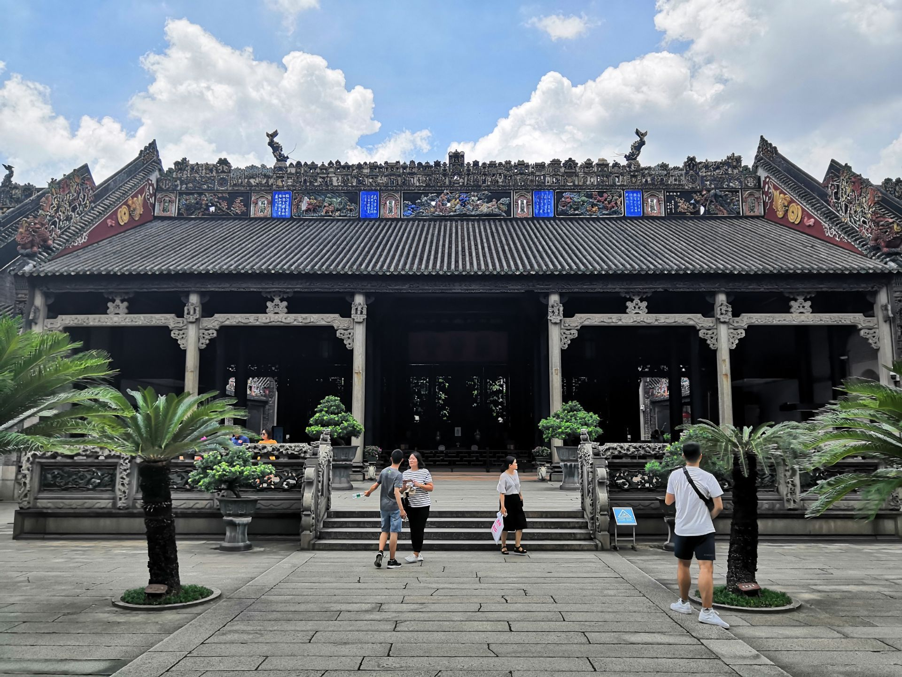
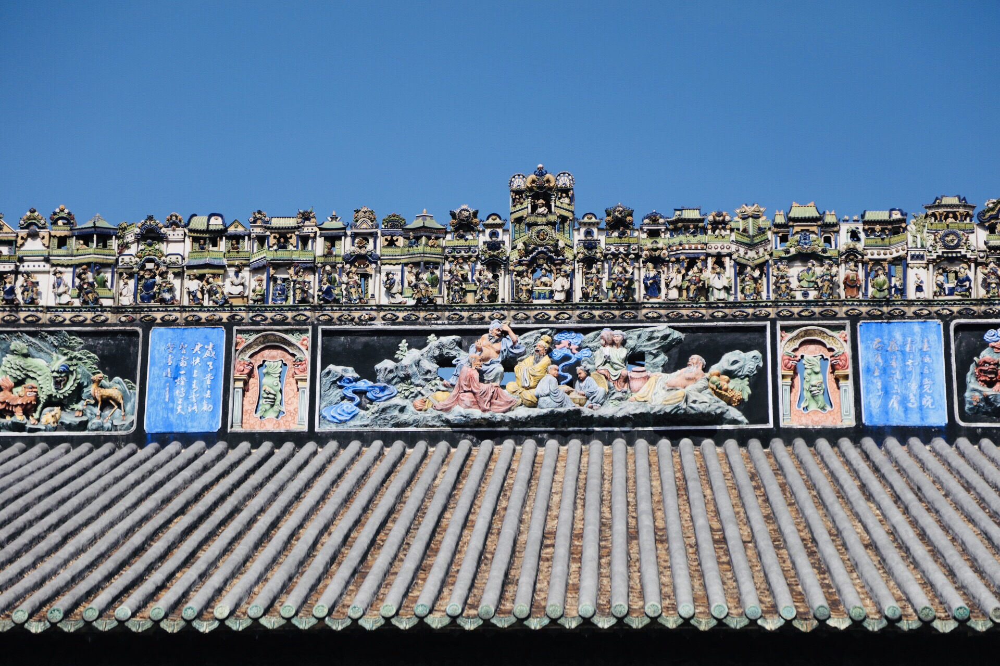

陈家祠，又名陈氏书院，是位于中国广东省广州市的一座著名的文化古迹，它集中展现了岭南地区传统建筑艺术的精华。建于清朝乾隆年间，这座庄严的建筑原本是为了供陈氏族人聚会和祭祖，同时也用于族中子弟的读书和科举考试的准备。
陈家祠以其雕刻艺术而闻名，包括木雕、石雕、砖雕等，每一处都极尽巧夺天工，无不反映出当时工匠们高超的技艺。祠堂的飞檐翘角、彩绘精美、灰塑生动，尤其值得一提的是，祠内的木雕画《百子图》以及一系列反映古代神话和历史故事的壁画，都极富文化价值和历史意义。
陈家祠不仅是一座建筑，它更是岭南文化的一个缩影，承载了广州乃至广东地区的历史演变和家族兴衰。现今，陈家祠对外开放，成为人们了解岭南传统建筑与雕刻艺术的重要场所，同时也是文化研究和旅游观光的热点。
 